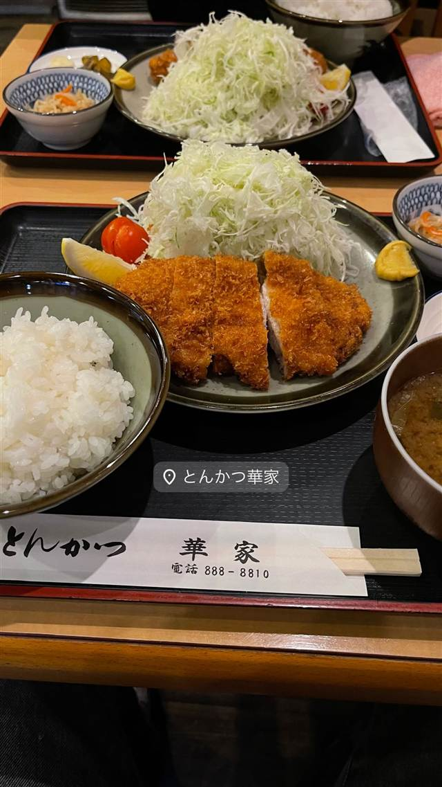

とんかつ・揚げ物 · とんかつ · 梶が谷
とんかつ華家
川崎出身バンドSHISHAMOファンの聖地、精肉店から約50年続く老舗
とんかつ華家
WHY GO
地元出身バンドSHISHAMOのファンが集う聖地でグッズや交流ノートが残る
精肉店から数えて約50年、とんかつ専門店としても35年を数える川崎・梶ケ谷の老舗。音楽好きの店主とのつながりから、地元出身のガールズバンド『SHISHAMO』のファンが集う“聖地”としても知られている。
TRIVIA
豆知識
- 川崎出身のガールズバンド『SHISHAMO』の聖地として知られ、店内にはメンバーのポスターやグッズ、ファンが書き込む交流ノートが置かれている
- バンドが全国区になる前からのスクラップブックが保管されている
REVIEWS
世間の評判
3.36食べログ
元精肉店ならではの揚げたて
- 元精肉店だけあってとんかつはサクサクでボリュームがあると評価する声がある
- 夜はご飯やキャベツ、味噌汁がおかわりできる点を評価する声がある
- 店が小さく席数も少ないため待ち時間が発生することがあると指摘されている
食べログ 口コミ75件
| 創業 | 精肉店時代を含めて約50年、とんかつ店として約35年 |
|---|---|
| 系譜 | 精肉店から発展してとんかつ専門店になった老舗 |
| 看板 | ロースとんかつ定食（小900円〜） |
| どこから | 23区の外れ・近郊 |
| 営業時間 | 月・火 11:30-13:40、17:05-21:00 水 休み 木〜日 11:30-13:40、17:05-21:00 |
| 予算 | 昼 ¥1,000～¥1,999 夜 ¥2,000～¥2,999 |
| 定休日 | 水曜 |
| 予約 | 予約可 |
| 場所 | 梶が谷 神奈川県川崎市高津区梶ケ谷3-7-25 |
| メモ | ライス・味噌汁・キャベツはおかわり無料 |
食べたもの：とんかつ定食
NEARBY
近い店・同じ系統の店
-
 とんかつ 両国
とんかつ はせ川 両国店
大門の名店『むさしや』仕込み、三元豚のとんかつがビブグルマン4年連続
昼 ¥1,000～¥1,999 夜 ¥2,000～¥2,999
とんかつ 両国
とんかつ はせ川 両国店
大門の名店『むさしや』仕込み、三元豚のとんかつがビブグルマン4年連続
昼 ¥1,000～¥1,999 夜 ¥2,000～¥2,999
-
 とんかつ 溜池山王
とんかつ まさむね
岩塩30種類以上から厳選、ミシュランビブグルマン4年連続の上ロースかつ
昼 ¥1,000～¥1,999 夜 ¥2,000～¥2,999
とんかつ 溜池山王
とんかつ まさむね
岩塩30種類以上から厳選、ミシュランビブグルマン4年連続の上ロースかつ
昼 ¥1,000～¥1,999 夜 ¥2,000～¥2,999
-
 とんかつ 三軒茶屋駅
生産者組合 とんかつ 幻水豚（ゲンスイトン）
還元水を飲ませ自然飼育した幻水豚を使う「白いとんかつ」
昼 ¥1,000～¥1,999 夜 ¥1,000～¥1,999
とんかつ 三軒茶屋駅
生産者組合 とんかつ 幻水豚（ゲンスイトン）
還元水を飲ませ自然飼育した幻水豚を使う「白いとんかつ」
昼 ¥1,000～¥1,999 夜 ¥1,000～¥1,999
-
 とんかつ 白金高輪駅
とんかつ 王龍
店主引退で暖簾を継いだ、公式サイトは今も旧店名「大五」のまま
昼 ¥1,000～¥1,999 夜 ¥3,000～¥3,999
とんかつ 白金高輪駅
とんかつ 王龍
店主引退で暖簾を継いだ、公式サイトは今も旧店名「大五」のまま
昼 ¥1,000～¥1,999 夜 ¥3,000～¥3,999
-
 とんかつ 都筑ふれあいの丘駅
とんかつの店 馬酔木（あしび）
杜仲高麗豚を使った厚切りロースかつ、食べログ神奈川で上位常連
昼 ¥1,000～¥1,999 夜 ¥2,000～¥2,999
とんかつ 都筑ふれあいの丘駅
とんかつの店 馬酔木（あしび）
杜仲高麗豚を使った厚切りロースかつ、食べログ神奈川で上位常連
昼 ¥1,000～¥1,999 夜 ¥2,000～¥2,999
-
 とんかつ 大門
とんかつ檍 大門店
銀座三笠会館で修行した創業者が始めた、林SPFポークの厚切りとんかつ
昼 ¥1,000～¥1,999 夜 ¥1,000～¥1,999
とんかつ 大門
とんかつ檍 大門店
銀座三笠会館で修行した創業者が始めた、林SPFポークの厚切りとんかつ
昼 ¥1,000～¥1,999 夜 ¥1,000～¥1,999